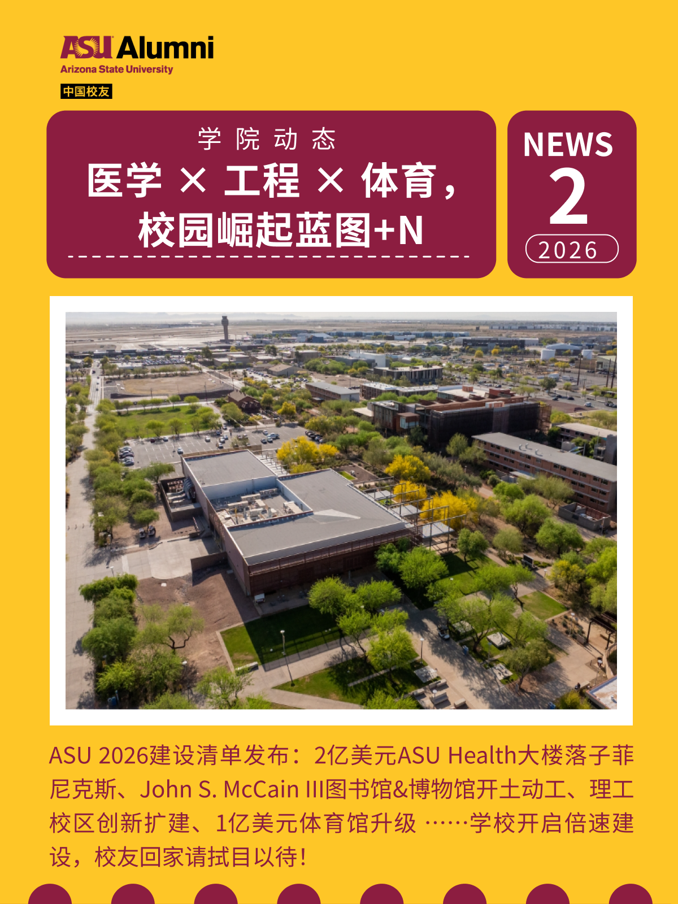
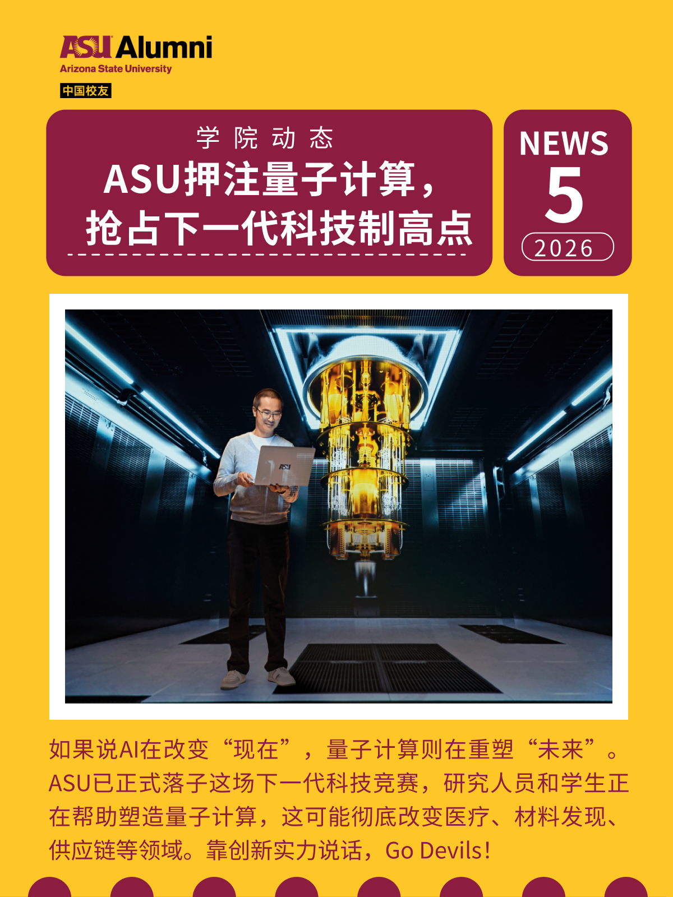
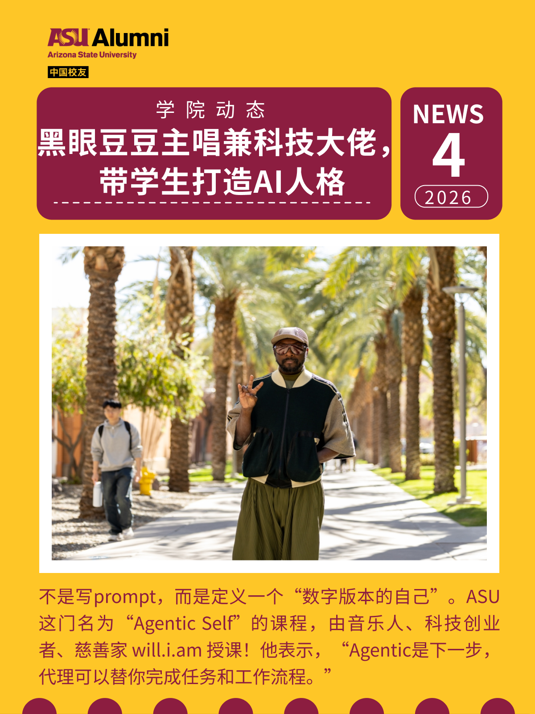
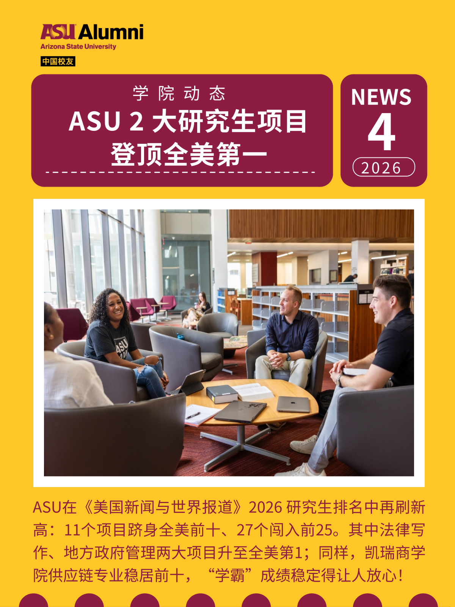
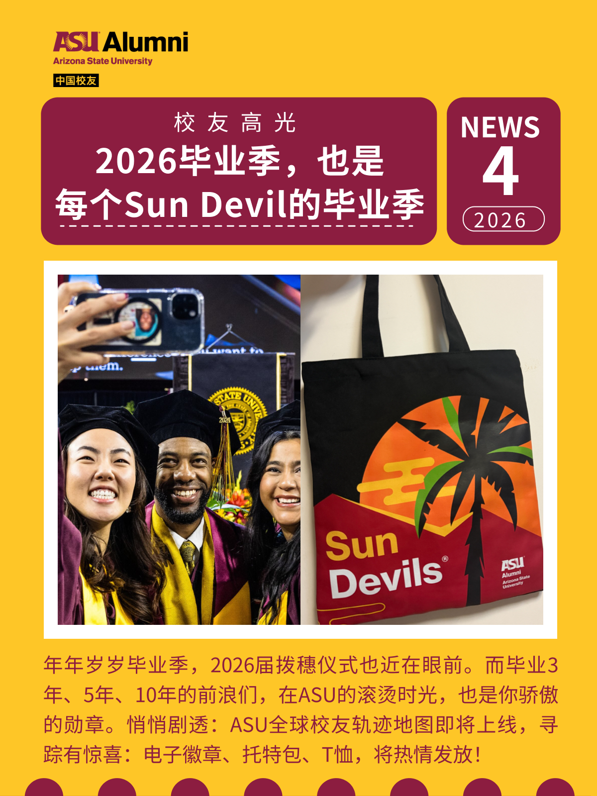
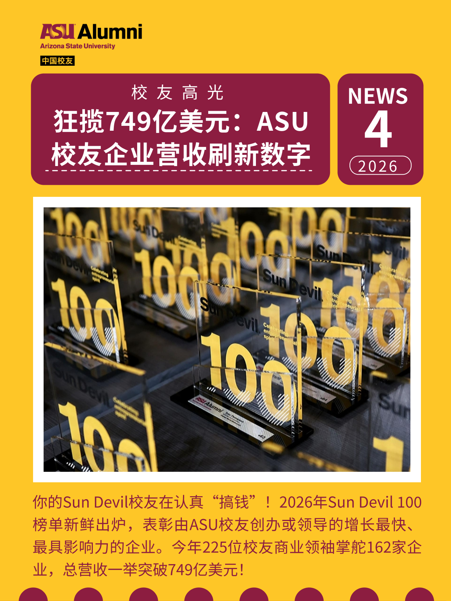
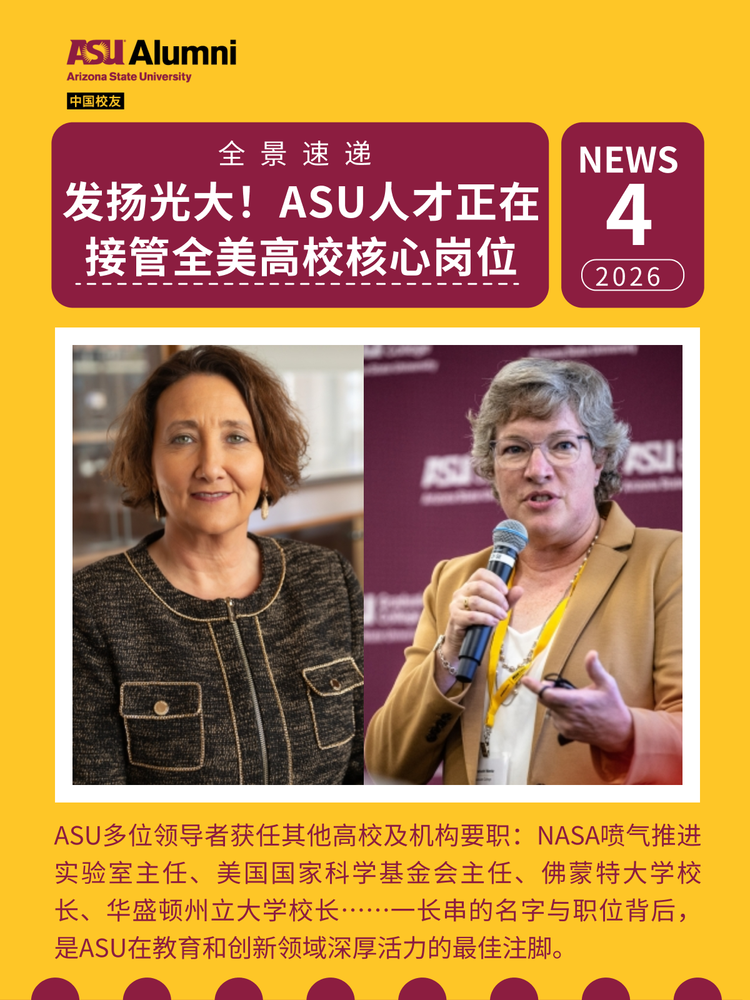
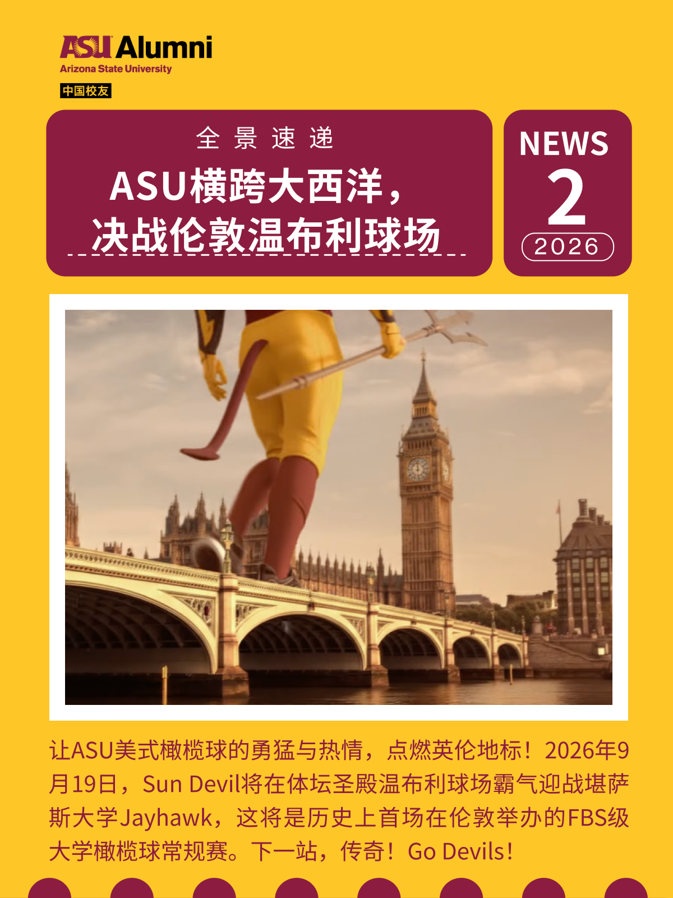
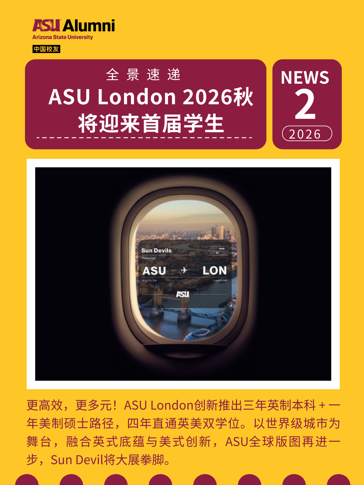

02
The Issues
Every Issue, a Different Story.
Every Issue, the Same Standard.
Each edition opened with a lead story chosen for relevance to alumni life — graduation season, campus breakthroughs, festival greetings, career milestones. Below is a selection from the archive.











